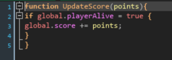
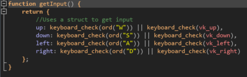

About:
Fly Simulator is an incredibly accurate game based on the life of flies. I made this game to show people the incredibly difficult life of flies and to learn more about creating games.
How to Play:
Use WASD or arrow keys to move around. Avoid obstacles to get points. Collect power-ups to get special abilities.
Learning Goal:

This method takes an integer and adds it to the points variable. It is used at the end of every single attack to increase the score. Even though it's not a lot of code I only have to put 1 line in each object instead of multiple.

This method stores the keys that are being pressed by the user. It runs every frame and making it a method saves a lot of room in the players code.
LLM Usage:
No code for the game was generated using a LLM. However, I used AI to come with a color palette for the background and to help create the website. This made things a lot easier because I struggle with colors and am not the best at creating websites. It helped to speed up the website development a lot and improved the quality of the colors in the game.